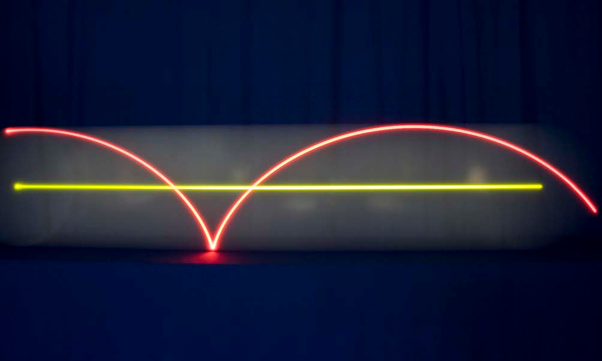
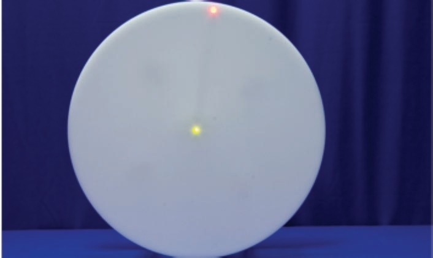
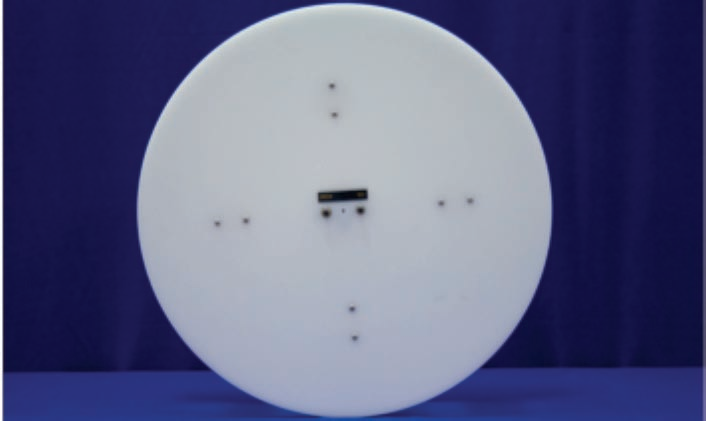

Concept
This apparatus allows for a comparison between the velocity of the center of mass, $v_{cm}$, and the velocity of a point on the rim, $v$, of a wheel that rolls without slipping. Because the velocity of a point on the rim is the sum of its translational and rotational components (where the rotational component is measured relative to the center of mass), it varies from zero at the bottom of the wheel to $2v_{cm}$ at the top of the wheel. Thus, $0 ≤ v ≤ 2v_{cm}$.
Procedure
- Turn on the green LED and acknowledge its location at the center of mass. Turn off the stage lights.
- Roll the wheel and notice that the green LED moves with constant velocity.
- Turn off the green LED, and turn on the red LED. Acknowledge the red LED’s location at the rim of the wheel. Roll the wheel, and note that the rim’s speed varies from zero at the bottom of the wheel to a maximum at the top of the wheel.
Equipment
- Large Wheel with LEDs